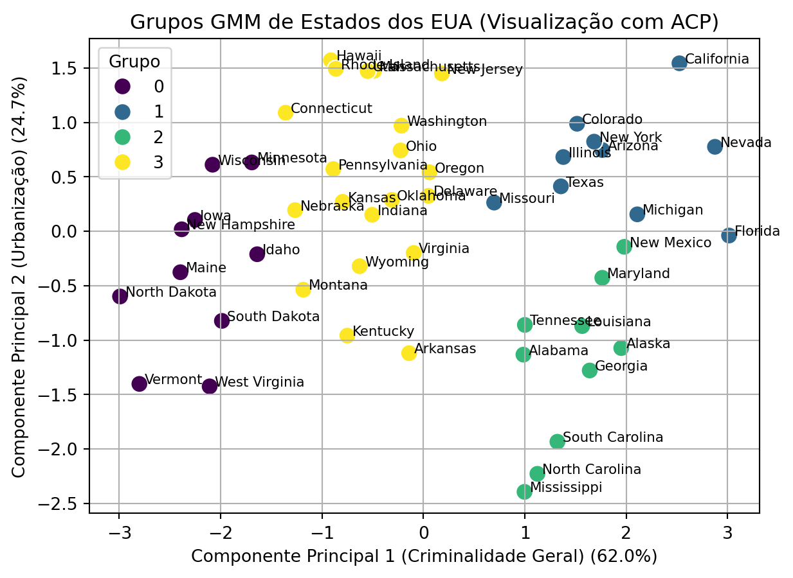

13Agrupamento com Modelos de Mistura Gaussiana (GMM)
Dando sequência à análise de agrupamentos do conjunto de dados USArrests iniciada na Capítulo 12, vamos agora aplicar uma abordagem baseada em modelos: o Modelo de Mistura Gaussiana (GMM). Enquanto o exemplo anterior utilizou métodos hierárquicos e K-médias, aqui exploraremos as vantagens de uma abordagem probabilística.
Além disso, mostraremos passo a passo como o algoritmo de Expectation-Maximization (EM) ajusta iterativamente os parâmetros das distribuições Gaussianas para se adequar aos dados.
13.1 Preparação dos Dados
A preparação dos dados é a mesma do exemplo anterior. Carregamos o conjunto de dados USArrests e padronizamos as variáveis para que tenham média 0 e desvio padrão 1.
Código
import pandas as pdfrom sklearn.preprocessing import StandardScalerimport statsmodels.api as smimport matplotlib.pyplot as pltimport matplotlib as mplfrom sklearn.mixture import GaussianMixturefrom sklearn.decomposition import PCAimport seaborn as snsimport numpy as npfrom tabulate import tabulate# Carregando o conjunto de dadosdata = sm.datasets.get_rdataset("USArrests", "datasets").data# Padronizando os dadosscaler = StandardScaler()X_scaled = scaler.fit_transform(data)X_scaled_df = pd.DataFrame(X_scaled, index=data.index, columns=data.columns)print(tabulate(X_scaled_df.head(), headers='keys', tablefmt='pipe'))
Com base na análise exploratória do exemplo anterior (Capítulo 12), que sugeriu uma estrutura de 4 grupos, vamos configurar nosso GMM com \(K=4\) e visualizar como o algoritmo EM funciona.
Primeiro, vamos definir uma função auxiliar para desenhar as elipses que representam as distribuições de probabilidade de cada componente Gaussiano e reduzir a dimensionalidade dos dados para 2D usando a Análise de Componentes Principais (ACP), apenas para fins de plotagem.
Código
def draw_ellipse(position, covariance, ax=None, **kwargs):"""Desenha uma elipse representando a covariância de um componente GMM.""" ax = ax or plt.gca()# Decomposição da matriz de covariânciaif covariance.shape == (2, 2): U, s, Vt = np.linalg.svd(covariance) angle = np.degrees(np.arctan2(U[1, 0], U[0, 0])) width, height =2* np.sqrt(s)else: angle =0 width, height =2* np.sqrt(covariance)# Desenha a elipsefor nsig inrange(1, 4): ax.add_patch(mpl.patches.Ellipse(position, nsig * width, nsig * height, angle=angle, **kwargs))# Reduzindo a dimensionalidade com ACP para visualizaçãopca = PCA(n_components=2)X_pca = pca.fit_transform(X_scaled)
Agora, vamos observar o algoritmo EM em ação a partir de uma inicialização aleatória.
Figura 13.1: Visualização das iterações do algoritmo EM partindo de uma inicialização aleatória.
A Figura 13.1 ilustra o processo de ajuste do GMM a partir de uma inicialização aleatória, mostrando como as elipses se ajustam aos dados a cada iteração.
13.3 Efeito da Inicialização
A inicialização do algoritmo EM pode impactar tanto a velocidade de convergência quanto a solução final encontrada. Uma inicialização pobre pode levar o algoritmo a um mínimo local subótimo. Vamos comparar a solução convergida da nossa inicialização aleatória com uma inicialização informada, usando os centroides do K-médias, que é o padrão do sklearn.
Figura 13.2: Comparação da convergência final do GMM com inicialização aleatória (esquerda) vs. K-médias (direita).
A Figura 13.2 revela como a escolha do método de inicialização pode impactar o resultado final do GMM. A inicialização aleatória (esquerda) e a inicialização baseada em K-médias (direita) levaram a agrupamentos visivelmente distintos. Isso ocorre porque o algoritmo EM, sensível às condições iniciais, pode convergir para um ótimo local em vez do ótimo global. A inicialização com K-médias, que posiciona os centróides iniciais de forma mais informada, tende a produzir soluções mais estáveis e reprodutíveis. Por essa razão, e para manter a consistência com a análise do capítulo anterior, usaremos o resultado do modelo inicializado com K-médias para a interpretação dos grupos.
13.4 Interpretação dos Grupos
Agora, com o modelo estimado utilizando o K-médias para inicialização, podemos analisar os grupos no espaço dos componentes principais. Note que os grupos são muito similares aos observados na Figura 12.5 do exemplo anterior. Por isso vamos omitir aqui a análise de perfis.
Código
# Usando o modelo com inicialização k-médias para os grupos finaisdata['gmm_grupo'] = gmm_kmeans_init.predict(X_pca)# Criando um DataFrame para o plotpca_df = pd.DataFrame(data=X_pca, columns=['PC1', 'PC2'])pca_df['gmm_grupo'] = data['gmm_grupo'].valuespca_df['state'] = data.index# Plotandoplt.figure(figsize=(7, 5))sns.scatterplot(x='PC1', y='PC2', hue='gmm_grupo', data=pca_df, palette='viridis', s=100)# Adicionando os nomes dos estados ao gráficofor i inrange(pca_df.shape[0]): plt.text(x=pca_df.PC1[i]+0.05, y=pca_df.PC2[i], s=pca_df.state[i], fontdict=dict(color='black',size=8))# Interpretando os eixos da ACPexplained_variance = pca.explained_variance_ratio_plt.title('Grupos GMM de Estados dos EUA (Visualização com ACP)')plt.xlabel(f'Componente Principal 1 (Criminalidade Geral) ({explained_variance[0]:.1%})')plt.ylabel(f'Componente Principal 2 (Urbanização) ({explained_variance[1]:.1%})')plt.legend(title='Grupo')plt.grid(True)plt.show()

Figura 13.3: Visualização dos grupos GMM (inicialização K-médias) no espaço dos componentes principais.
13.5 Alocação Probabilística
Uma diferença fundamental entre o K-médias e o GMM é que o K-médias realiza uma alocação “rígida”, onde cada ponto de dado pertence exclusivamente a um único grupo. Em contraste, o GMM realiza uma alocação “suave”. Na figura anterior, ignoramos essa propriedade e simplesmente alocamos cada estado ao grupo de maior probabilidade.
Essa alocação suave significa que, para cada ponto, o GMM calcula a probabilidade de ele pertencer a cada um dos grupos. Essa abordagem nos dá uma medida de incerteza sobre a classificação de cada ponto. Um ponto equidistante de dois centros de grupo pode ter uma probabilidade de 50% para cada um, enquanto um ponto no coração de um grupo terá uma probabilidade próxima de 100% para aquele grupo.
Vamos inspecionar as probabilidades de alguns estados específicos para ver isso em ação. Selecionamos estratégicamente para fins didáticos os estados da Califórnia, Novo México e Missouri.
Código
# Obter as probabilidades de pertencimentoprobs = gmm_kmeans_init.predict_proba(X_pca)# Criar um DataFrame com as probabilidadesprob_df = pd.DataFrame(probs, index=data.index, columns=[f'Grupo {i}'for i inrange(gmm_kmeans_init.n_components)])# Selecionar estados de interesseestados_selecionados = prob_df.loc[['California', 'New Mexico', 'Missouri']]# Imprimir a tabela formatadaprint(tabulate(estados_selecionados, headers='keys', tablefmt='pipe', floatfmt=".4f"))
Tabela 13.2: Probabilidades de pertencimento a cada grupo para estados selecionados.
| rownames | Grupo 0 | Grupo 1 | Grupo 2 | Grupo 3 |
|:-----------|----------:|----------:|----------:|----------:|
| California | 0.0000 | 0.9961 | 0.0039 | 0.0000 |
| New Mexico | 0.0000 | 0.4966 | 0.5034 | 0.0000 |
| Missouri | 0.0000 | 0.8131 | 0.0002 | 0.1867 |
A Tabela 13.2 mostra resultados interessantes. Notamos visualmente pela Figura 13.3 que a Califórnia é um estado bastante distante dos grupos 0, 2 e 3. Isso se reflete na probabilidade muito próxima de 1 de pertencimento ao grupo 1 para esse estado.
Já os estados do Missouri e do Novo México estão na “fronteira” entre dois grupos. Por isso, essas observações têm probabilidades de pertencimento distribuídas entre mais de um grupo. O caso mais extremo é o do Novo México, que tem probabilidades quase idênticas de pertencer aos grupos 1 e 2. Logo, podemos dizer que esse estado compartilha características com ambos os grupos.
13.6 Onde o K-médias Falha e o GMM Brilha
No exemplo anterior com os dados USArrests, vimos que os resultados do K-médias e do GMM foram bastante similares. Isso ocorreu porque os grupos naquele conjunto de dados são razoavelmente esféricos e bem definidos. Contudo, a verdadeira vantagem do GMM sobre o K-médias surge em cenários onde essa suposição de esfericidade não se sustenta.
A principal delas é a flexibilidade de formato do GMM: como cada componente Gaussiano possui sua própria matriz de covariância, o modelo pode se adaptar a grupos com diferentes formas (elípticas) e orientações. Para ilustrar essa diferença crucial, vamos criar um exemplo onde o K-médias falha precisamente por sua rigidez.
Vamos criar um exemplo clássico com dados alongados (anisotrópicos) para demonstrar onde o GMM, com sua capacidade de modelar covariâncias, supera o K-médias.
Figura 13.4: Comparação entre K-médias e GMM em grupos não esféricos.
A Figura 13.4 ilustra perfeitamente a diferença. O K-médias, buscando minimizar a distância para o centroide de maneira uniforme em todas as direções, divide os grupos alongados ao meio. Ele não consegue reconhecer que os pontos em um mesmo grupo alongado estão mais próximos “seguindo a forma” do grupo do que de um centroide de outro grupo.
Em contraste, o GMM tem sucesso. Cada componente Gaussiano tem sua própria matriz de covariância, o que permite ao modelo aprender a forma elíptica e a orientação de cada grupo. As elipses cinzas na figura da direita representam as distribuições de probabilidade aprendidas, que se alinham perfeitamente com a estrutura real dos dados. Este exemplo visual destaca a superioridade dos modelos probabilísticos como o GMM em cenários de agrupamento com estruturas de covariância mais complexas.